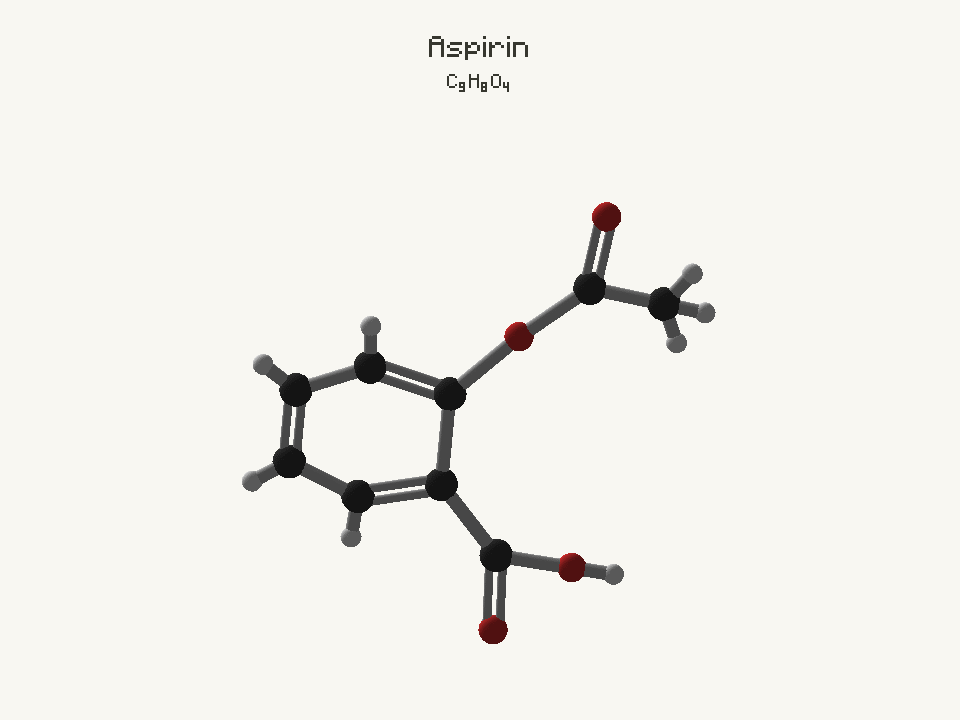
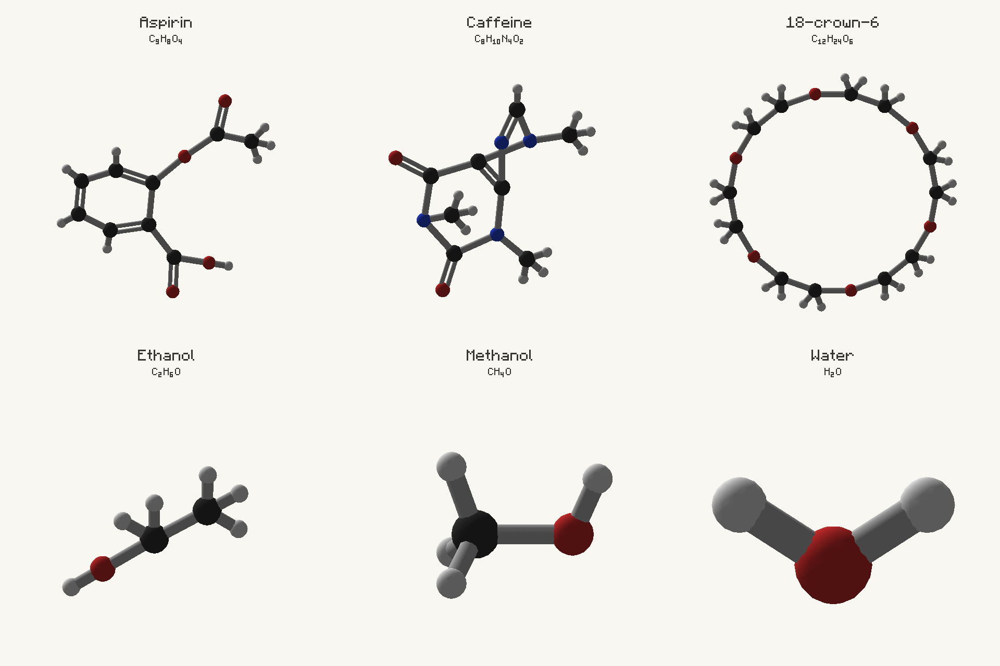
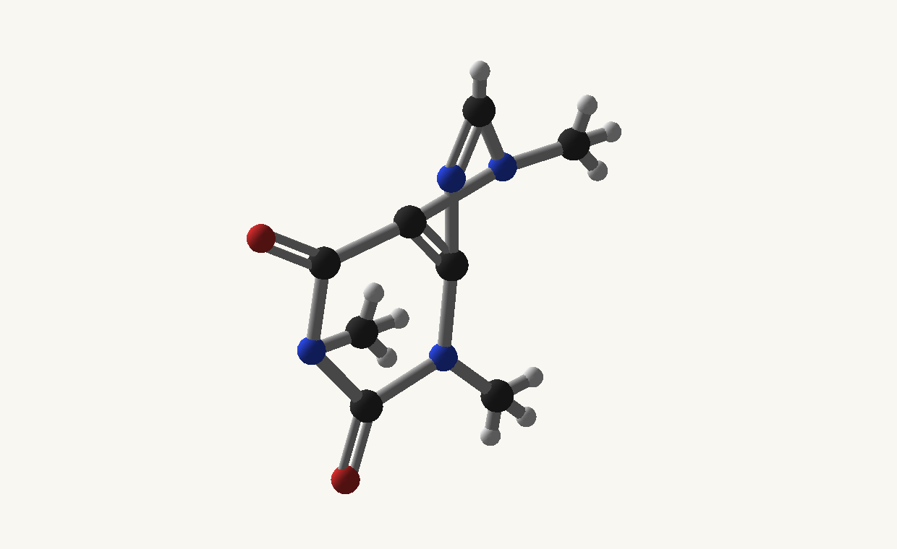
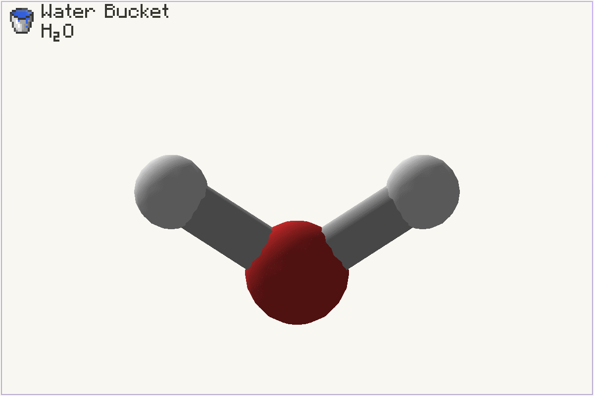
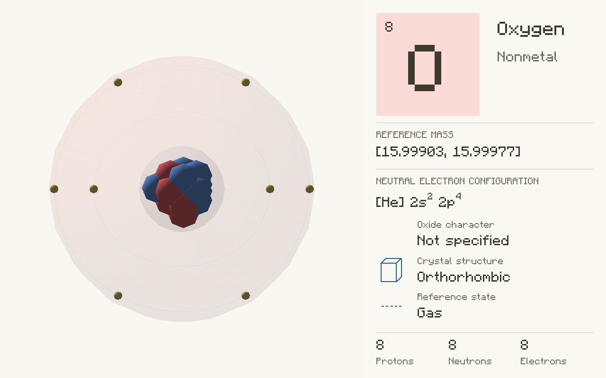
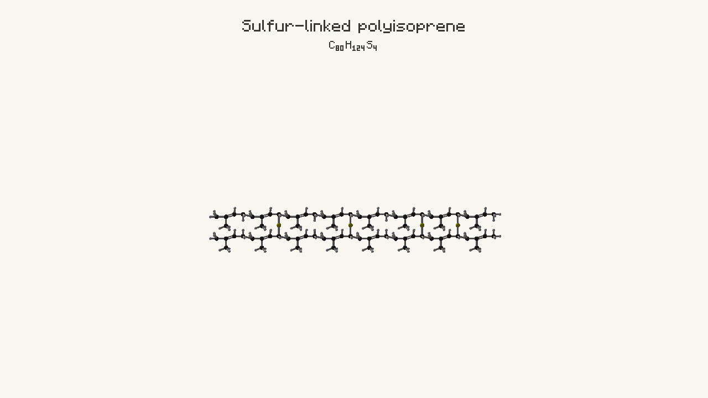

Avogadro guide · Minecraft 1.12.2 / Cleanroom
Export images and animations
Submit a typed request, keep its job handle, and show the result when the job completes. The media below is captured through the same export API.
Imports and complete companion files
Examples are methods inside the downloadable companion classes. Copy the methods you need into your own class and keep the imports at the top. GuideModels contains the reusable chemical recipes; GuideTasks contains the operations. These files are documentation examples, not built-in library content.
Java model recipes · Java operations · Complete Groovy model script · Groovy client helpers
The complete Groovy model script can be saved as groovy/postInit/avogadro_examples.groovy. It includes the reusable GuideModels class and registers all ten chemical examples through the reloadable script registry. The separate client helper download is a reference for client integrations: keep it out of common postInit scripts and dedicated-server entry points. Java users should likewise copy common operations into their common class and keep screen/export operations in a client class.
import io.github.wurtzitane.avogadro.api.*;
import io.github.wurtzitane.avogadro.molecule.*;
// Client code only:
import io.github.wurtzitane.avogadro.api.client.*;
import io.github.wurtzitane.avogadro.client.export.*;
import java.util.List;
import java.util.Map;Export a rotating aspirin GIF
Context: client thread, after guide:aspirin is loaded. Read it with AvogadroClientApi.view().get(new ResourceLocation("guide:aspirin")) and handle a missing definition before submitting.
Java · method inside your host class; imports and full files below.
public static ExportJob exportGif(MoleculeDef aspirin) throws IOException {
var options = ExportOptions.builder(1).size(960, 720).fps(20).secondsPerRotation(3)
.background(0xf8f7f2).filename("aspirin.gif").build();
return AvogadroClientApi.exports().submit(MediaExportRequest.molecule(aspirin).options(options).build());
}Groovy · same API; place methods in your script or client helper as described.
static ExportJob exportGif(MoleculeDef aspirin) throws IOException {
def options = ExportOptions.builder(1).size(960, 720).fps(20).secondsPerRotation(3)
.background(0xf8f7f2).filename("aspirin.gif").build();
return AvogadroClientApi.exports().submit(MediaExportRequest.molecule(aspirin).options(options).build());
}

<game directory>/avogadro-exports/aspirin.gif. Reusing that filename fails rather than overwriting.Export several models in one gallery
Java · method inside your host class; imports and full files below.
public static ExportJob exportGallery(List<MoleculeDef> molecules) throws IOException {
// Size is the whole canvas, not each cell. Keep the count equal to the list size.
var options = ExportOptions.builder(molecules.size()).size(1920, 1280).columns(3)
.fps(20).secondsPerRotation(3).background(0xf8f7f2).filename("gallery.gif").build();
return AvogadroClientApi.exports().submit(MediaExportRequest.molecules(molecules).options(options).build());
}Groovy · same API; place methods in your script or client helper as described.
static ExportJob exportGallery(List<MoleculeDef> molecules) throws IOException {
// Size is the whole canvas, not each cell. Keep the count equal to the list size.
def options = ExportOptions.builder(molecules.size()).size(1920, 1280).columns(3)
.fps(20).secondsPerRotation(3).background(0xf8f7f2).filename("gallery.gif").build();
return AvogadroClientApi.exports().submit(MediaExportRequest.molecules(molecules).options(options).build());
}

Export caffeine as MP4
Java · method inside your host class; imports and full files below.
public static ExportJob exportMp4(MoleculeDef caffeine, Path ffmpeg) throws IOException {
var options = ExportOptions.builder(1).format(ExportOptions.Format.MP4).size(1920, 1080)
.fps(24).secondsPerRotation(3).background(0xf8f7f2)
.encoder(ffmpeg.toString()).filename("caffeine.mp4").build();
return AvogadroClientApi.exports().submit(MediaExportRequest.molecule(caffeine).options(options).build());
}Groovy · same API; place methods in your script or client helper as described.
static ExportJob exportMp4(MoleculeDef caffeine, Path ffmpeg) throws IOException {
def options = ExportOptions.builder(1).format(ExportOptions.Format.MP4).size(1920, 1080)
.fps(24).secondsPerRotation(3).background(0xf8f7f2)
.encoder(ffmpeg.toString()).filename("caffeine.mp4").build();
return AvogadroClientApi.exports().submit(MediaExportRequest.molecule(caffeine).options(options).build());
}
Install FFmpeg with libx264. Pass its executable path, set AVOGADRO_FFMPEG, or make it available on PATH. MP4 requires an opaque background. The library does not bundle the encoder.
Export an item card
Use a nonempty held item with a loaded molecule association. The screenshot below uses the water bucket bound by our water definition. Item metadata, NBT, and capability contents are retained in the accepted selection.
Java · method inside your host class; imports and full files below.
public static ExportJob exportItemCard(ItemStack held) throws IOException {
var selection = ItemExportSelection.select("held", null, held);
var media = ExportOptions.builder(1).size(1200, 800).fps(20).secondsPerRotation(3)
.showName(true).showFormula(true).textScale(2)
.background(0xf8f7f2).filename("water-card.gif").build();
return AvogadroClientApi.exports().submit(
MediaExportRequest.item(ItemExportOptions.of(selection, media, 2)).build());
}Groovy · same API; place methods in your script or client helper as described.
static ExportJob exportItemCard(ItemStack held) throws IOException {
def selection = ItemExportSelection.select("held", null, held);
def media = ExportOptions.builder(1).size(1200, 800).fps(20).secondsPerRotation(3)
.showName(true).showFormula(true).textScale(2)
.background(0xf8f7f2).filename("water-card.gif").build();
return AvogadroClientApi.exports().submit(
MediaExportRequest.item(ItemExportOptions.of(selection, media, 2)).build());
}

The item scale is an integer from 1 to 8; dimensions must be divisible by it. Cards require an opaque background. The API takes ItemExportOptions; the equivalent command is /avogadro export item held --scale 2.
Export an atom and its details
The explicit water recipe supplies oxygen-16 and hydrogen-1 configurations. A SMILES-only water definition does not automatically have this data. Java atom indices start at zero.
Java · method inside your host class; imports and full files below.
public static ExportJob exportAtom(MoleculeDef water) throws IOException {
var options = ExportOptions.builder(1).size(1280, 800).fps(20).secondsPerRotation(3)
.background(0xf8f7f2).filename("oxygen.gif").build();
return AvogadroClientApi.exports().submit(
MediaExportRequest.atom(new AtomExportOptions(water, 0, true)).options(options).build());
}Groovy · same API; place methods in your script or client helper as described.
static ExportJob exportAtom(MoleculeDef water) throws IOException {
def options = ExportOptions.builder(1).size(1280, 800).fps(20).secondsPerRotation(3)
.background(0xf8f7f2).filename("oxygen.gif").build();
return AvogadroClientApi.exports().submit(
MediaExportRequest.atom(new AtomExportOptions(water, 0, true)).options(options).build());
}

Use details=false for atom-only rendering; transparent GIF is then allowed. Atomic details require an opaque background. MoleculeRenderOptions are not supported for atomic exports.
Export the exact network you are viewing
Java · method inside your host class; imports and full files below.
public static ExportJob exportNetwork(PolymerPreview successfulPreview) throws IOException {
var options = ExportOptions.builder(1).size(1280, 720).fps(20).secondsPerRotation(3)
.background(0xf8f7f2).filename("polyisoprene.gif").build();
return AvogadroClientApi.exports().submit(MediaExportRequest
.polymer(successfulPreview, "Sulfur-linked polyisoprene").options(options).build());
// Success also writes polyisoprene.gif.json with the exact recipe, parameters, and seed.
}Groovy · same API; place methods in your script or client helper as described.
static ExportJob exportNetwork(PolymerPreview successfulPreview) throws IOException {
def options = ExportOptions.builder(1).size(1280, 720).fps(20).secondsPerRotation(3)
.background(0xf8f7f2).filename("polyisoprene.gif").build();
return AvogadroClientApi.exports().submit(MediaExportRequest
.polymer(successfulPreview, "Sulfur-linked polyisoprene").options(options).build());
// Success also writes polyisoprene.gif.json with the exact recipe, parameters, and seed.
}

Download the reproduction sidecar. Supply the last successful preview, not a pending request or freshly rebuilt default. The result’s reproduction() path points to the saved metadata. An unregistered finite model can also be exported:

Java · method inside your host class; imports and full files below.
public static ExportJob exportUnregistered(MoleculeStructure structure) throws IOException {
String formula = MoleculeLoader.formula(structure);
return AvogadroClientApi.exports().submit(MediaExportRequest
.structure(structure, "Finite authored model", formula, null).build());
}Groovy · same API; place methods in your script or client helper as described.
static ExportJob exportUnregistered(MoleculeStructure structure) throws IOException {
String formula = MoleculeLoader.formula(structure);
return AvogadroClientApi.exports().submit(MediaExportRequest
.structure(structure, "Finite authored model", formula, null).build());
}Progress, completion, and cancellation
Java · method inside your host class; imports and full files below.
public static void watch(ExportJob job, java.util.function.Consumer<String> showStatus) {
job.onComplete(result -> {
// This listener runs on the client thread after capture/encoder cleanup.
switch (result.state()) {
case SUCCEEDED -> showStatus.accept("Saved " + result.output());
case CANCELLED -> showStatus.accept("Export cancelled");
case FAILED -> showStatus.accept("Export failed: " + result.failure());
default -> throw new IllegalStateException("Expected a terminal result");
}
});
}Groovy · same API; place methods in your script or client helper as described.
static void watch(ExportJob job, java.util.function.Consumer<String> showStatus) {
job.onComplete(result -> {
// This listener runs on the client thread after capture/encoder cleanup.
switch (result.state()) {
case SUCCEEDED -> showStatus.accept("Saved " + result.output());
case CANCELLED -> showStatus.accept("Export cancelled");
case FAILED -> showStatus.accept("Export failed: " + result.failure());
default -> throw new IllegalStateException("Expected a terminal result");
}
});
}Java · method inside your host class; imports and full files below.
public static String progress(ExportJob job) {
var progress = job.progress(); // immutable, safe to read from another thread
return progress.state() + ": " + progress.encodedFrames() + "/" + progress.totalFrames();
}Groovy · same API; place methods in your script or client helper as described.
static String progress(ExportJob job) {
def progress = job.progress(); // immutable, safe to read from another thread
return progress.state() + ": " + progress.encodedFrames() + "/" + progress.totalFrames();
}Java · method inside your host class; imports and full files below.
public static boolean cancel(ExportJob job) {
// Requests cancellation; result() remains null until cleanup finishes.
return job.cancel();
}Groovy · same API; place methods in your script or client helper as described.
static boolean cancel(ExportJob job) {
// Requests cancellation; result() remains null until cleanup finishes.
return job.cancel();
}| Situation | Behavior | What your UI should do |
|---|---|---|
| No terminal result yet | job.result() == null | Keep progress visible; do not block the client thread |
| Success | SUCCEEDED with output path | Offer open/save actions |
| User cancels | CANCELLED after cleanup | Stop progress; do not show a failure |
| Capture/encoder fails | FAILED with failure text | Show the failure and allow a new submission |
| Another export is active | Submission throws IOException; no silent queue | Keep the active job and explain busy state |
| Late listener | Receives the retained result once on the client thread | Safe to register after completion |
| Listener throws | Other listeners and the outcome remain intact | Handle your own UI exceptions |
| Finished handle is cancelled | Cannot cancel a later export | Keep each handle tied to its own UI row |
Each listener registration runs once on the client thread after capture and encoder cleanup. Progress reads and cancellation are thread-safe. A cancellation request can lose the race with publication: check its boolean return and eventual terminal result.
Submit from the client thread
Java · method inside your host class; imports and full files below.
public static void exportFromWorker(MoleculeDef molecule, java.util.function.Consumer<ExportJob> ready) {
Minecraft.getMinecraft().addScheduledTask(() -> {
try {
ready.accept(exportGif(molecule));
} catch (IOException failure) {
throw new IllegalStateException("Could not start export", failure);
}
});
}Groovy · same API; place methods in your script or client helper as described.
static void exportFromWorker(MoleculeDef molecule, java.util.function.Consumer<ExportJob> ready) {
Minecraft.getMinecraft().addScheduledTask(() -> {
try {
ready.accept(exportGif(molecule));
} catch (IOException failure) {
throw new IllegalStateException("Could not start export", failure);
}
});
}The facade is quiet by default. Attach your own status UI or listener. Existing commands use the same engine and add chat reporting. Request validation happens for every entry point, including directly constructed options.
Export options and limits
| API option / command | Default / accepted values | Notes |
|---|---|---|
| format / --format | GIF; GIF or MP4 | GIF included; MP4 needs FFmpeg/libx264 |
| filename / --output | Automatically chosen when omitted | Simple filename, inside avogadro-exports; never overwrite |
| size / --width --height | Single: 600 × 600; gallery: 300 × 300 per cell before limits | 64–4096 per side; ≤8,388,608 pixels total |
| fps / --fps | 20 for ordinary media | GIF 1–50; MP4 1–60 |
| secondsPerRotation / --speed | Appearance preference (initially 6 seconds) | --seconds-per-rotation is an alias; each turn needs ≥2 frames |
| rotations / --rotations | 1 | ≤7,200 frames and ≤600 seconds total |
| showName / showFormula | Both true for normal molecule media | Commands: --name / --formula |
| background / --background | RGB DED8C4 for ordinary media | null / none: binary GIF transparency, not MP4 or cards |
| direction / --direction | Appearance preference | forward / reverse |
| cubic / --appearance | Appearance preference | sphere / cube |
| columns / --columns | 4 | 1–16; ≤256 molecules; each gallery cell ≥96 × 96 |
| textScale / --text-scale | 1 for ordinary media | 0.5–3; atomic preferences may supply a saved value |
| encoder / --encoder | Environment/PATH when unset | Executable with libx264 |
| renderOptions | Optional molecule-only style | Camera/style snapshot for this export; no atomic-view support |
GIF has on/off transparency and at most 256 colors per frame. Use a solid background when you want smooth-looking edge colors. Large models and high frame counts take longer; begin with a small canvas and short rotation.
Command equivalents and saved preferences
/avogadro export guide:aspirin --format gif --width 960 --height 720 --fps 20 --speed 3 --background "#F8F7F2"
/avogadro export all --columns 4 --name true --formula true
/avogadro export item held --scale 2
/avogadro export 3d guide:water --atom 1 --details true --format gif
/avogadro export status
/avogadro export cancel
/avogadro export help| Entry | Important difference |
|---|---|
| Atomic command --atom | 1-based; Java API indices are 0-based |
| Item command defaults | 192 × 192, scale 2, item name on, formula off, opaque background |
| Atomic details defaults | 1000 × 640 at 24 fps; atom-only 640 × 640, subject to saved preferences |
| Atomic preferences | Mods → Avogadro → Config → Atom viewer and exports |
| Explicit flags/options | Override saved defaults |
| Restore atom defaults | Restores atomic export preferences; does not reset shared Appearance rotation speed |
| Resource-pack fonts | Element cards use the examiner’s font; item custom fonts retain their renderer |
| Particle visibility | Captured for an atomic export; does not change mid-job |